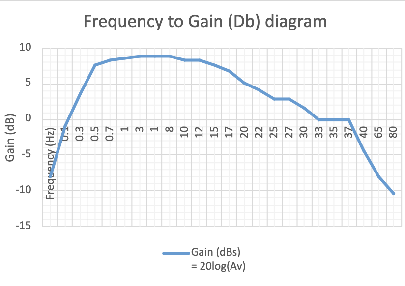
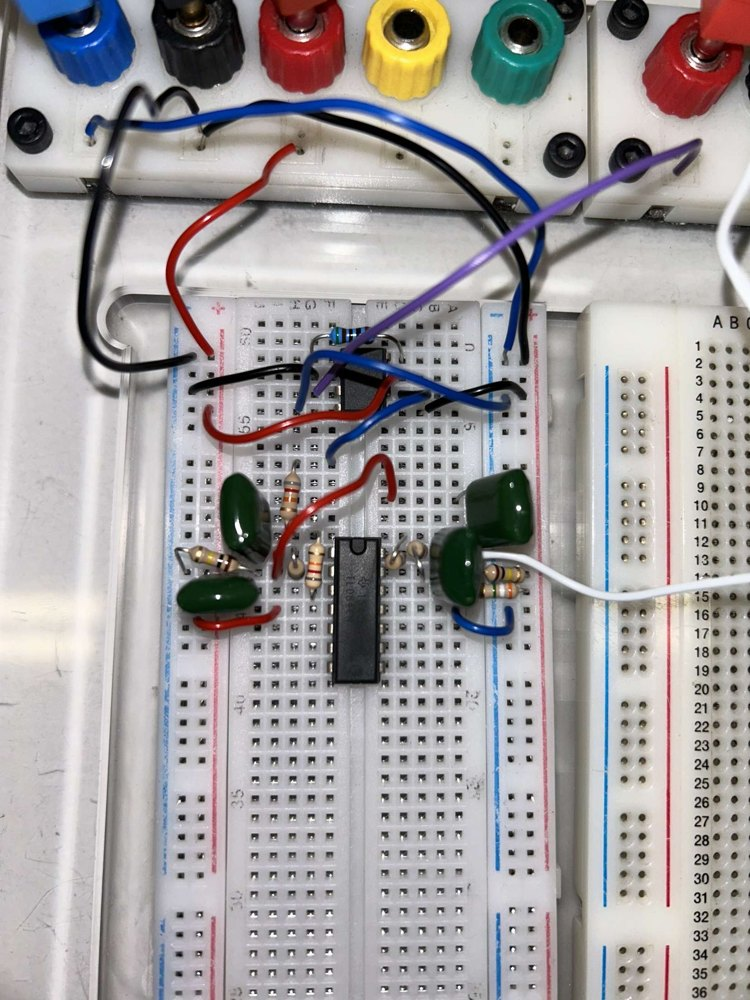

Why an ECG needs its own amplifier
The heart's electrical signal reaches the skin at only a few millivolts, and it shares the electrodes with mains interference, movement and breathing artefacts. A useful ECG front end has to amplify the small difference between two electrodes, reject what both electrodes see in common, and keep only the frequency band where the cardiac signal lives.
The lab series built that chain in order. Each stage was wired on a breadboard, powered from a split ±15 V supply, driven from a signal generator and judged on an oscilloscope, so the effect of every block could be seen before the next one was added.
- AmplifyInverting TL084 stage designed for a gain of 10.
- RejectDifferential amplifier designed for a gain of 18.
- RefineINA121 instrumentation amplifier set to a gain of 99 with one 510 Ω resistor.
- FilterSecond-order Butterworth high-pass (0.4 Hz) and low-pass (20 Hz) stages.
- TestA simulated cardiac waveform passed through the complete chain.
Design values against measurements
Every stage was compared with the value it was designed for. Gains came in 4–7% below design at every stage. The clearest difference was in common-mode rejection, where the INA121 did about 26 dB better than the discrete differential amplifier.
| Stage | Design value | Measured |
|---|---|---|
| Inverting amplifier | Gain 10 | 9.62 at 1 kHz |
| Differential amplifier | Gain 18, common-mode gain 0 | Gain 16.86 at 50 Hz, common-mode gain 0.396, CMRR 32.6 dB |
| Instrumentation amplifier | Gain 99 | Gain 92.5 at 50 Hz, common-mode gain 0.104, CMRR 59.0 dB |
| Band-pass filter | 0.4–20 Hz | About 0.62–21 Hz at the −3 dB points (interpolated) |
The instrumentation amplifier performed best largely because it needed fewer external parts. One gain resistor replaced several resistor pairs whose tolerances otherwise stack up and unbalance the inputs, which is the likeliest reason for the discrete differential amplifier's weaker common-mode rejection.
Shaping the ECG band
The low-pass stage used 100 nF capacitors and 80 kΩ resistors, with a stated gain of 1.57. It passed 1 Hz with a gain of 1.25, fell to 0.73 at 20 Hz and dropped to 0.17 at 1 kHz. The report compared the 20 Hz reading with 0.707, but for a stage with a pass-band gain above 1 the −3 dB level is higher, so this stage's cut-off was probably below 20 Hz.
The high-pass stage used 680 nF capacitors and 581.5 kΩ resistors, chosen from the parts available. It attenuated 0.3 Hz as intended, but its gain above the cut-off recovered only to 0.87, lower than designed. Combined, the band-pass response peaked at about 8.9 dB between 5 and 10 Hz.

Where the noise came from
The report traced most of the remaining error to mismatched resistor values, component tolerance and the lab environment: mains-powered equipment, nearby devices and loose breadboard wiring. Battery power or isolation, a notch filter at the mains frequency and secure connections were the suggested remedies.
It also asked what would change to record muscle activity instead. EMG occupies a much wider band than ECG, so the filter cut-offs, interference filtering and electrodes would all need to change. A year later I worked with EMG directly, in my robotic-arm dissertation.

Reading it back two years later
The circuit work holds up; the report shows how much my writing has changed since. It walks through the lab procedure step by step, takes a single reading at each setting and applies a component tolerance only once, to the filter cut-offs, rather than predicting a spread for each stage. Some voltage ratios are labelled as decibels, and the low-pass cut-off is judged against the wrong reference level.
Today I would repeat each measurement, predict the expected spread from component tolerances before testing, and separate method from findings. My later reports, such as the fNIRS dissertation and the surgical-workflow study, follow that structure.
Project material
- Read the lab reportPDF · 21 pages · Student ID removed